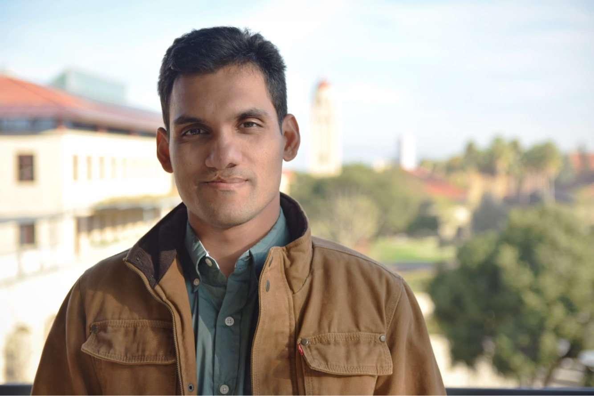

<div class="row">
<div class="large-7 columns samping">
<div style="margin-top: 0;
    position: relative;
    padding-bottom: 1rem;
    /* border-bottom: #636363 1px solid; */
    word-wrap: break-word;
    background: #3E3E3E;
    padding: 32px 20px;
    border-bottom-left-radius: 5px;
    border-bottom-right-radius: 5px;">    



<br><br>
I am Osman Mamun, a computational catalysis researcher, scientific software developer, 
and aspiring data scientist from Bangladesh. After finishing my undergraduate degree in 
Chemical Engineering from Bangladesh University of Engineering and Technology, I moved
to South Carolina, USA to complete my PhD in Chemical Engineering. Currently, I'm working 
in SUNCAT center for interface science and catalysis in Stanford University as a postdoctoral
scholar. 
<br>
<br>

</div>

</div>


{% include widgets.html %}
	  	

</div>
</div>
